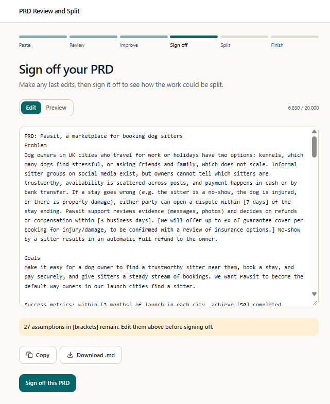
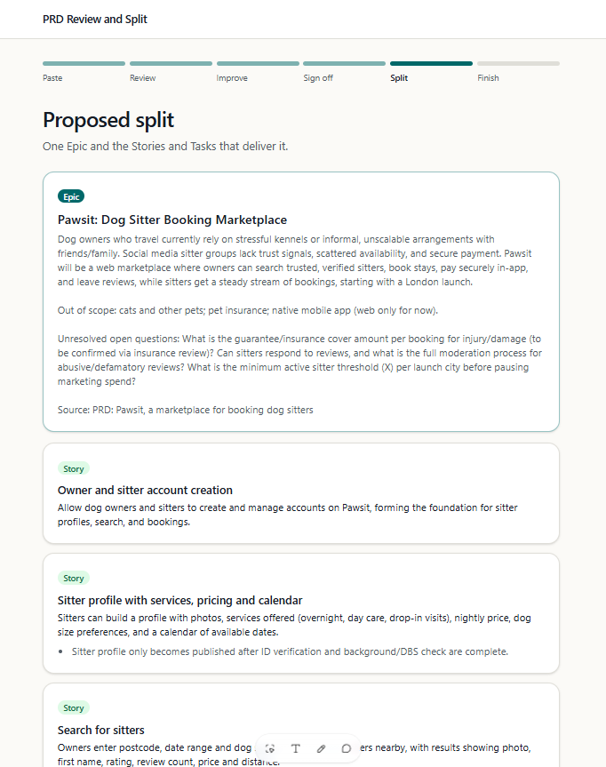
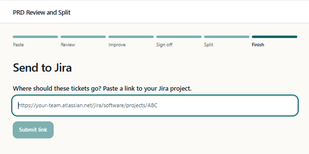
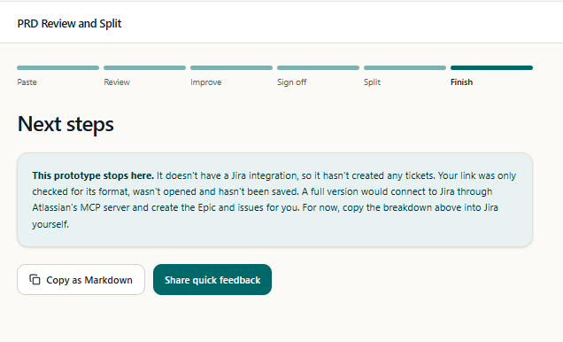
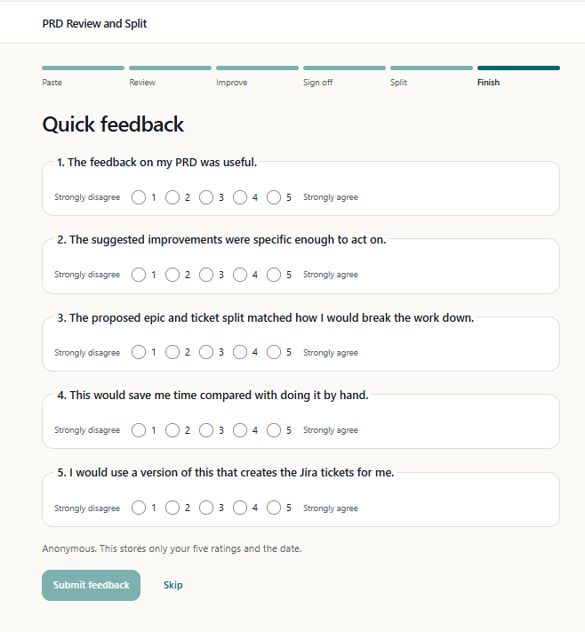
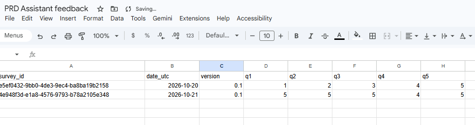

PRD to Jira : public prototype
Problem
My PRD to Jira workflow only worked inside my own Claude Code session, so no other product manager could try it, and I couldn't learn whether they would find it useful. I wanted a public prototype anyone could open in a browser: paste a PRD, get feedback, sign off the improved version, review a proposed split into Jira tickets, then rate the experience.
Putting a Claude-powered tool on the open internet raises two risks I wanted to design out before building any screens. Strangers must not be able to run up my Anthropic bill, so I needed absolute daily token caps. And PRDs can hold confidential or personal information, so I wanted to keep as little visitor data as possible, with a survey of simple 1-5 ratings and no free text.
Approach
I asked Claude Code to propose an architecture before any code existed, with two fixed constraints: the intelligence had to come from Claude sub-agents, and the frontend had to be built in Lovable. It explored what I had already built, including my agents, my skill and the token-budget code from the Tariff Advisor, and I approved a plan that keeps Lovable to the screens only. The browser calls one Supabase Edge Function that holds my Anthropic key, runs each sub-agent as its own isolated Claude call, and enforces every limit.
I built and tested that backend first, because it is the part that spends money. Then I wrote a detailed spec for Lovable to build the screens against a mock API. Once the screens were done, I pointed them at the live backend and tested the whole flow with real PRDs, which is where most of the learning happened.
Approach — step by step
- I chose isolated API calls over the Agent SDK. Each sub-agent is a separate prompt with its own context, so token use is counted exactly from the API's usage figures, which is what hard caps need.
- I reused my existing agents instead of rewriting them. A script copies the rubric, the improvement loop and the breakdown rules out of my Claude Code agent and skill files, and a test fails if the two ever drift apart.
- I stacked the caps and made them absolute. Per-call and input-size limits sit under per-session, per-visitor and global daily budgets. The budget is reserved before each call and corrected from the real usage afterwards, inside the database, with a spend limit on a dedicated Anthropic workspace as the outer wall.
- I moved the sign-off gates out of the prompts and into code. The server only allows the steps in order and allows one revision of the split, so the flow can't be skipped by a clever request.
- I kept visitor data to a minimum. PRDs are never stored, IP addresses are only used as a daily-changing hash deleted after two days, and the survey writes five 1-5 ratings to a Google Sheet.
- I checked current documentation before committing to a design. That changed two decisions. Lovable doesn't deploy backend code from GitHub, so I used my own Supabase project in an EU region instead of Lovable Cloud. Supabase's new API keys aren't JWTs, so the function is public by design and protected by the caps and an allowed-origins list.
- I tested the first Lovable draft with a different PRD. It flagged the right gaps on my sample PRD, but a dog-sitter PRD returned the same findings. The draft was running on the mock data I had asked it to start with, not a real model.
- I measured reliability instead of trusting one good run. On real PRDs the review step failed intermittently, at worst about one run in two, because the model sometimes returned a malformed reply and my validator rejected all of it. I added a repair step for the usual slips, one retry that still goes through the token caps, and an error detail that names the problem without logging anything the visitor wrote. Anthropic's strict tool mode looked like the cleaner fix, but it hid my length limits from the model, which then sometimes ran on until it hit the output cap, so I reverted it.
- I let live testing find what unit tests couldn't. Lovable's editor preview runs on a different domain from the one I had allowed, so the browser silently blocked the API. My own test traffic used up the daily allowance for our shared connection, which I reset by rotating the secret behind the visitor hash. And the API's host sets a Cloudflare security cookie, so I corrected my "no cookies" claim to "none set by the app" and added the disclosure to the spec's privacy notice.
Claude Code capabilities used
- Plan Mode with Explore subagents — mapped my existing agents and budget code, then waited for my approval before any file was written.
- Web search and page fetch — checked the current Lovable, Supabase and Anthropic documentation instead of relying on memory.
- A test-first backend, broken on purpose — 154 automated tests run against real SQL in an in-process Postgres, and I deliberately broke the code to confirm the tests fail when they should.
- Terminal and the Supabase CLI — linked the project, applied the migrations, set the secrets from a file it never read, deployed the function, then ran the live function repeatedly to measure reliability and restored its own temporary test limits afterwards.
- A spec written for another AI tool — a screen-by-screen spec and API contract for Lovable, built mock-first so the interface could be judged before any backend existed.
- Architecture diagram generation — produced the diagram below of the request path and where each secret lives.
![Architecture of the PRD Review and Split prototype: a product manager uses the Lovable frontend, which only shows screens and holds no keys. It calls one Supabase Edge Function over the internet. That function holds the Anthropic key and enforces the step order and the token caps. It makes one isolated Claude call per step through the Anthropic API, keeps token counters and the current step in Supabase Postgres, which stores no PRD text and is purged daily, and sends the survey ratings to a Google Apps Script web app that checks a secret and the row shape before appending five ratings to a Google Sheet.](../images/prd-review-and-split-architecture.svg)
Outcome
- A working prototype from start to finish. The Lovable app, running against the live backend, takes a PRD through review, suggested fixes, sign-off, a proposed Epic and issue split with one revision, a Jira link, and a five-question survey whose answers land as a row in a Google Sheet (screenshots below). A full run takes about 100 seconds of model time.
- Reliable enough to share. After the fixes, 12 of 12 reviews succeeded across three different PRDs, at about 17 seconds each, compared with failures in up to half of runs before.
- Spend and data limits that were tested, not just written. 154 automated tests cover the token caps, the step order and the survey rules. The standing limits are 200,000 tokens a day across all visitors, 100,000 per visitor, 80,000 per session and 10 sessions per visitor per day, with a spend limit on the Anthropic workspace as the outer wall.
So far only I have used the prototype, so there is no feedback from product managers to report yet. The rows in the Sheet are test runs.








Repository
View the GitHub repo (the backend, its tests and the Lovable spec)